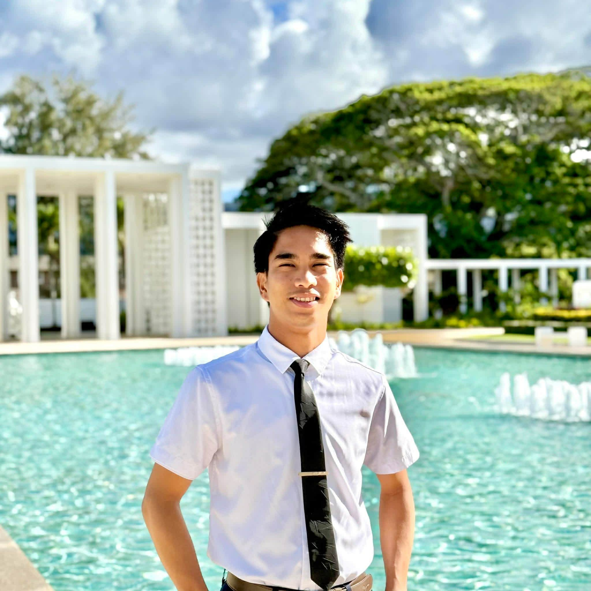

Hospitality & Tourism Management Student

Hello! My name is Benjamin Cayton III and I am currently studying Hospitality and Tourism Management at Brigham Young University–Hawaii. I am passionate about the hospitality industry and enjoy creating meaningful guest experiences.
My goal is to build a career with Marriott International where I can contribute to exceptional guest service while continuing to grow professionally.
Visit My LinkedInClick the button below to view my professional resume.
Conducted research analyzing the customer experience across Starbucks service channels including website interaction, online chat, and in-store service. Presented findings and recommendations for improving digital and in-person guest satisfaction.
Created a professional PowerPoint presentation analyzing service strategies used by successful hospitality brands and explaining how these strategies improve customer satisfaction and brand loyalty.
Analyzed marketing strategies for a hospitality brand, comparing traditional and digital campaigns. Provided insights and recommendations to enhance audience engagement and brand visibility.
Problem: Restaurants and hospitality businesses often struggle to maintain high customer satisfaction when guest volume is extremely high.
Solution: While working at Gateway Buffet, I collaborated with servers and kitchen staff to manage service flow during busy hours. We improved communication between staff members and ensured guests received timely assistance.
Result: Guests experienced smoother service and shorter waiting times, improving overall satisfaction and maintaining positive guest experiences.
"Benjamin consistently demonstrates professionalism and a strong commitment to excellent guest service. He works well with others and contributes positively to the team environment."
– Hospitality Supervisor
"Benjamin is hardworking, dependable, and eager to learn. His ability to communicate with guests and coworkers makes him a valuable asset in any hospitality environment."
– Workplace Manager
Email: bmcayton10@gmail.com
Phone: 808-743-0804
Connect on LinkedIn